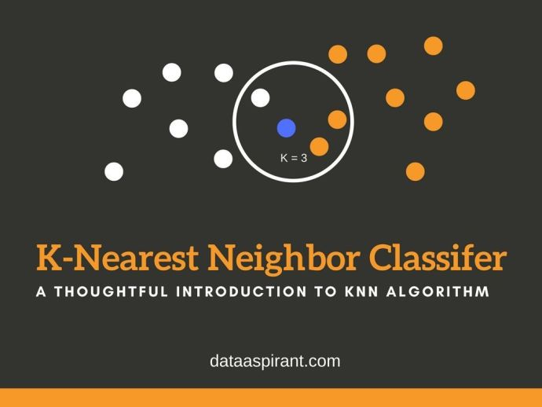
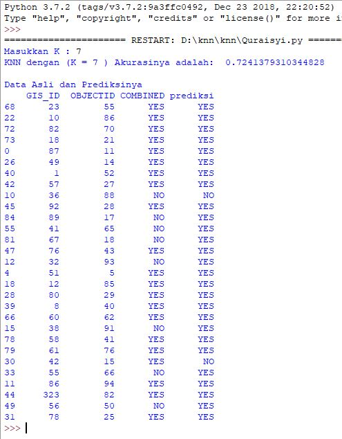

Pengertian KNN¶

Apa yang dimaksud knn???¶
Algoritme k-nearest neighbor (k-NN atau KNN) adalah sebuah metode untuk melakukan klasifikasi terhadap objek berdasarkan data pembelajaran yang jaraknya paling dekat dengan objek tersebut.
Data pembelajaran diproyeksikan ke ruang berdimensi banyak, dimana masing-masing dimensi merepresentasikan fitur dari data. Ruang ini dibagi menjadi bagian-bagian berdasarkan klasifikasi data pembelajaran. Sebuah titik pada ruang ini ditandai kelas c jika kelas c merupakan klasifikasi yang paling banyak ditemui pada k buah tetangga terdekat titk tersebut. Dekat atau jauhnya tetangga biasanya dihitung berdasarkan jarak Euclidean.
Pada fase pembelajaran, algoritme ini hanya melakukan penyimpanan vektor-vektor fitur dan klasifikasi dari data pembelajaran. Pada fase klasifikasi, fitur-fitur yang sama dihitung untuk data test (yang klasifikasinya tidak diketahui). Jarak dari vektor yang baru ini terhadap seluruh vektor data pembelajaran dihitung, dan sejumlah k buah yang paling dekat diambil. Titik yang baru klasifikasinya diprediksikan termasuk pada klasifikasi terbanyak dari titik-titik tersebut.
Nilai k yang terbaik untuk algoritme ini tergantung pada data; secara umumnya, nilai k yang tinggi akan mengurangi efek noise pada klasifikasi, tetapi membuat batasan antara setiap klasifikasi menjadi lebih kabur. Nilai k yang bagus dapat dipilih dengan optimasi parameter, misalnya dengan menggunakan cross-validation. Kasus khusus di mana klasifikasi diprediksikan berdasarkan data pembelajaran yang paling dekat (dengan kata lain, k = 1) disebut algoritme nearest neighbor.
Ketepatan algoritme k-NN ini sangat dipengaruhi oleh ada atau tidaknya fitur-fitur yang tidak relevan, atau jika bobot fitur tersebut tidak setara dengan relevansinya terhadap klasifikasi. Riset terhadap algoritme ini sebagian besar membahas bagaimana memilih dan memberi bobot terhadap fitur, agar performa klasifikasi menjadi lebih baik.
Terdapat beberapa jenis algoritme pencarian tetangga terdekat, diantaranya:
- Linear scan
- Pohon kd
- Pohon Balltree
- Pohon metrik
- Locally-sensitive hashing (LSH)
Algoritme k-NN ini memiliki konsistensi yang kuat. Ketika jumlah data mendekati tak hingga, algoritme ini menjamin error rate yang tidak lebih dari dua kali Bayes error rate (error rate minimum untuk distribusi data tertentu).
Algoritma KNN¶
-
Menentukan parameter K sebagai banyaknya jumlah tetangga terdekat dengan objek baru.
-
Menghitung jarak antar objek/data baru terhadap semua objek/data yan gtelah di training.
-
Urutkan hasil perhitungan tersebut.
-
Tentukan tetangga terdekat berdasarkan jarak minimum ke K.
-
Tentukan kategori dari tetangga terdekat dengan objek/data.
-
Gunakan kategori mayoritas sebagai klasifikasi objek/data baru.
##### Kelebihan dan kekurangan KNN
1.Kelebihan
KNN memiliki beberapa kelebihan yaitu bahwa dia tangguh terhadap training data yang noisy dan efektif apabila data latih nya besar.
2.Kelemahan
Sedangkan kelemahan dari KNN adalah : 1. KNN perlu menentukan nilai dari parameter K (jumlah dari tetangga terdekat) 2. Pembelajaran berdasarkan jarak tidak jelas mengenai jenis jarak apa yang harus digunakan dan atribut mana yang harus digunakan untuk mendapatkan hasil yang terbaik 3. Biaya komputasi cukup tinggi karena diperlukan perhitungan jarak dari tiap sample uji pada keseluruhan sample latih.
# Study kasus
##### Study kasus KNN pada data Neighborhood_Plan_Status_data.csv
Sebagai contoh, saya akan menunjukkan cara kerja algoritma K-NN dengan dataset sampel dari data Neighborhood_Plan_Status_data.csv. Data ini bersumber URL: https://data.austintexas.gov/api/views/y2av-vmhq/rows.csv?accessType=DOWNLOAD
Implementasi studi kasus:
Langkah 1: Import Libraries
Pada kasus ini , saya akan menggunakan library pandas dan sklearn
### Import librari terlebih dahulu
import pandas as pd
from sklearn.neighbors import KNeighborsClassifier
from sklearn.model_selection import train_test_splitcara instal library pandas dan sklearn yaitu dengan cara membuka cmd administrator lalu ketik:
pip install pandas
pip install matplotlibSeperti yang dapat Anda lihat di atas , saya mengiport libraries:
>> Panda untuk membaca dan menulis spreadsheet
>> Sklearn teruji dan memiliki dokumentasi yang super lengkap
Langkah 2: Menginput Data
Dibawah ini adalah script untuk menginput data.
### Menginput file csv dengan librari pandas
data_orj = pd.read_csv("Neighborhood_Plan_Status_data.csv")Langkah 3: Mengambil semua data untuk percobaan
### Mengambil semua data untuk percobaan
data = data_orj.loc [:,'the_geom':'COMBINED']Langkah 4: Mengambil tiga colom
### Mengambil 3 kolom
data_knn = data[['GIS_ID','COMBINED','OBJECTID']]Langkah 5: Input jumlah K atau jumlah tetangga terdekat
### Input jumlah K atau jumlah tetangga terdekat
inK = int(input("Masukkan K : "))Langkah 6: Mencari knn dengan menggunakan sklearn neighbors clssifier
knn = KNeighborsClassifier(n_neighbors = inK)
x,y = data_knn.loc[:,data_knn.columns != 'COMBINED'], data_knn.loc[:,'COMBINED']
x_train,x_test,y_train,y_test = train_test_split(x,y,test_size = 0.3, random_state = 42)
knn.fit(x_train,y_train)
prediction = knn.predict(x_test)Langkah 7: Menampilkan akurasi data
print('KNN dengan (K =',inK,') Akurasinya adalah: ', knn.score(x_test,y_test))
print("")##### LANGKAH 8: MENAMPILKAN DATA ASLI DAN PREDIKSINYA
datatest = pd.DataFrame(x_test)
datatest["COMBINED"] = y_test
datatest["prediksi"] = prediction
print ("Data Asli dan Prediksinya")
print (datatest)##### HASIL OUTPUT DARI PROGRAM DI ATAS:
